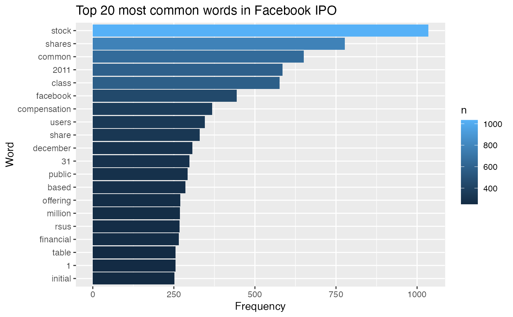
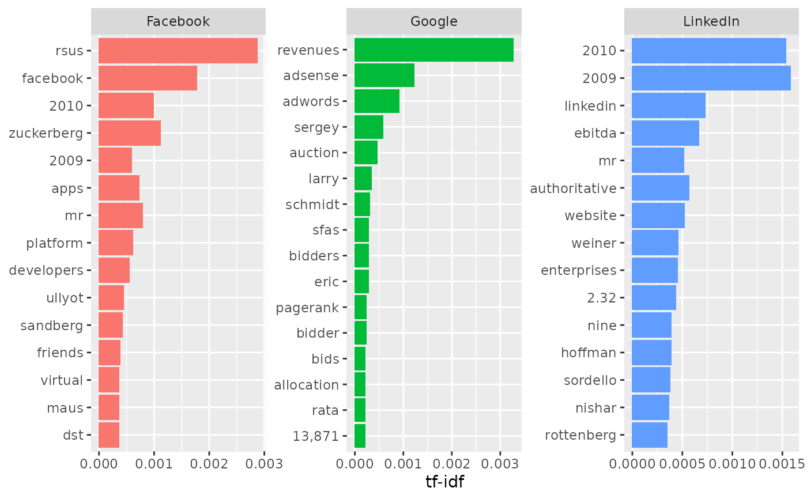

On Feb 1st, 2011, Facebook Inc. filed an S-1 form with the Securities and Exchange Commission as part of their initial public offering (IPO). This dataset includes the text of that document as well as text from the IPOs of two competing companies: Google and LinkedIn.
ipoFormat
The format is a list of three character vectors. Each vector contains the line-by-line text of the IPO Prospectus of Facebook, Google, and LinkedIn, respectively.
Source
All IPO prospectuses are available from the U.S. Securities and Exchange Commission: Facebook, Google, LinkedIn.
Details
Each of the three prospectuses is encoded in UTF-8 format and contains some non-word characters related to the layout of the original documents. For analysis on the words, it is recommended that the data be processed with packages such as tidytext. See examples below.
References
Zweig, J., 2020. Mark Zuckerberg: CEO For Life?. WSJ. Available at: https://www.wsj.com/articles/BL-TOTALB-326.
Examples
library(tidytext)
library(tibble)
library(dplyr)
library(ggplot2)
library(forcats)
# Analyzing Facebook IPO text
facebook <- tibble(text = ipo$facebook, company = "Facebook")
facebook %>%
unnest_tokens(word, text) %>%
anti_join(stop_words) %>%
count(word, sort = TRUE) %>%
slice_head(n = 20) %>%
ggplot(aes(y = fct_reorder(word, n), x = n, fill = n)) +
geom_col() +
labs(
title = "Top 20 most common words in Facebook IPO",
x = "Frequency",
y = "Word"
)
#> Joining, by = "word"

# Comparisons to Google and LinkedIn IPO texts
google <- tibble(text = ipo$google , company = "Google")
linkedin <- tibble(text = ipo$linkedin, company = "LinkedIn")
ipo_texts <- bind_rows(facebook, google, linkedin)
ipo_texts %>%
unnest_tokens(word, text) %>%
count(company, word, sort = TRUE) %>%
bind_tf_idf(word, company, n) %>%
arrange(desc(tf_idf)) %>%
group_by(company) %>%
slice_max(tf_idf, n = 15) %>%
ungroup() %>%
ggplot(aes(tf_idf, fct_reorder(word, tf_idf), fill = company)) +
geom_col(show.legend = FALSE) +
facet_wrap(~company, ncol = 3, scales = "free") +
labs(x = "tf-idf", y = NULL)
